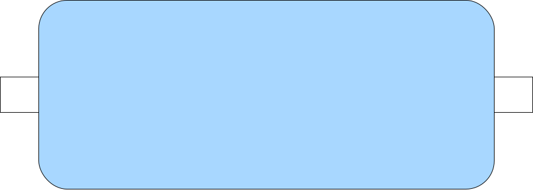

抵抗カラーコード計算
第1数字
黒(0)
茶(1)
赤(2)
橙(3)
黄(4)
緑(5)
青(6)
紫(7)
灰(8)
白(9)
第2数字
黒(0)
茶(1)
赤(2)
橙(3)
黄(4)
緑(5)
青(6)
紫(7)
灰(8)
白(9)
第3数字
白(10^-3)
銀(10^-2)
金(10^-1)
黒(10^0)
茶(10^1)
赤(10^2)
橙(10^3)
黄(10^4)
緑(10^5)
青(10^6)
紫(10^7)
第4数字
橙(±0.05%)
紫(±0.1%)
青(±0.25%)
緑(±0.5%)
茶(±1%)
赤(±2%)
金(±5%)
銀(±10%)
抵抗値
抵抗値から
カラー逆引き
